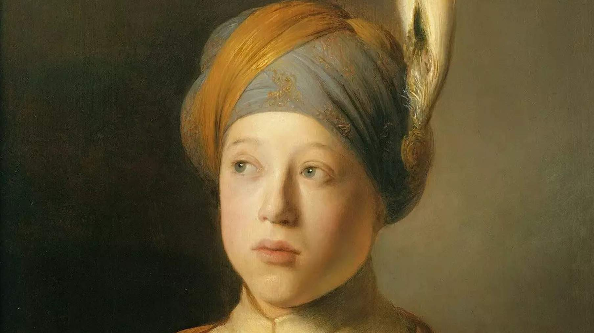
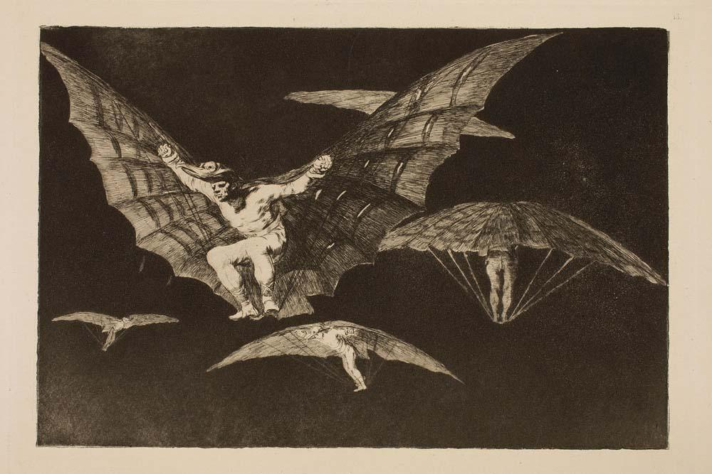

ВЫСТАВКА
Эпоха Рембрандта и Вермеера. Шедевры Лейденской коллекции (онлайн-трансляция)
Дата проведения 22 июля 2022

О выставке
Редкая и подробная коллекция великих голландцев
Выставка, основной акцент которой сделан на Лейдене и сформировавшемся вокруг него художественном
сообществе, рассказывает об истоках творчества Рембрандта, о его отношениях с соперниками и соратниками, а
также о тех живописных традициях, которые сложились в Голландии в золотой для нее XVII век. Наряду с
известными коллекциями Москвы и Санкт-Петербурга, работы, представленные на выставке, отражают глубокий
интерес к голландскому искусству, существующий в России на протяжении уже более трехсот лет.
Американский предприниматель Томас Каплан и его жена сделали невозможное: за 15 лет собрали огромную
коллекцию живописи Рембрандта и его современников. Эти работы на аукционах появляются редко и практически
все поделены между великими музеями — им же удалось собрать с нуля разнообразную подборку картин Рембрандта,
Франса Халса, Яна Вермеера и многих других. Всего в ГМИИ можно будет увидеть 80 картин (включая учителя
Рембрандта Питера Ластмана и Яна Ливенса — друга, с которым он делил одну мастерскую), а также два рисунка с
изображениями животных — молодой лев Рембрандта и «Голова медведя» Леонардо да Винчи.
ВЫСТАВКА
"Между землей и небом": выставка четырех художников в ГМИИ им. Пушкина
Дата проведения c 26 апреля по 3 июля 2022 года

О выставке
В ГМИИ им. А.С. Пушкина при поддержке СК "Абсолют Страхование" пройдет выставка "Между землей и небом", на которой представлены работы Рембрандта ван Рейна
Выставка шедевров Лейденской коллекции – одно из крупнейших и наиболее значимых частных собраний голландской живописи XVII века.
В экспозиции представлено 82 произведения, ни одно из которых ранее не выставлялось в России.
11 картин Рембрандта и 2 его рисунка, а также 10 картин, выполненных в его мастерской, составляют основу собрания.
На выставке представлены и другие художники из Лейдена, чьи полотна отличаются тонким исполнением и тщательным выписыванием мельчайших деталей.
Лейденская коллекция получила название в честь голландского города Лейдена, где в 1606 году родился Рембрандт. Собрание составили картины голландских мастеров. Лейденская коллекция стала складываться недавно — в 2003 году.
И относительно за короткий срок, всего 15 лет, превратилась в одно из крупнейших в мире собраний нидерландского искусства XVII столетия.
Это время называют золотым веком голландской живописи. В Нидерландах тогда жили и работали около 2 тысяч художников.
Самыми известными из них стали Рембрандт, Ян Вермеер, Карел Фабрициус, Франс Халс и другие их современники.
Сегодня в Лейденскую коллекцию входит более 250 работ — живопись и графика.